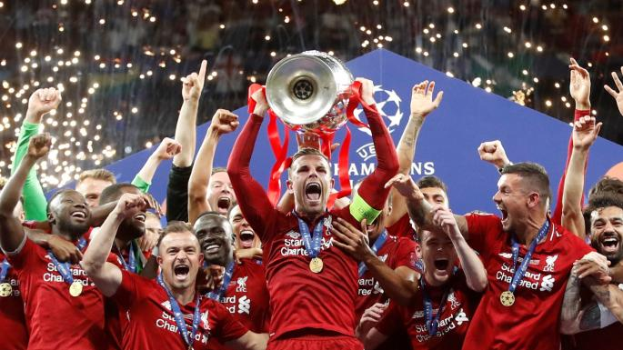
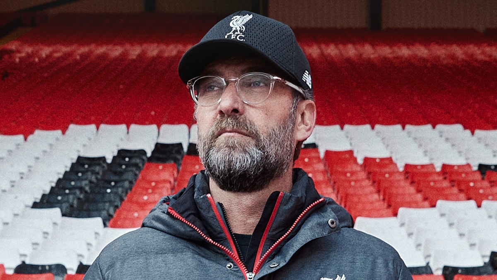

This is a Liverpool friendly fact fan site that has a lot of facts sourced from wikipedia. Many of the statments are opinion based. No Everton fans allowed.
Press play to hear the offical "Gerry & The Pacemakers - You'll Never Walk Alone" song of the Liverpool Reds
Click the buttons to reveal facts
Facts about the team, coach (manager), and fans.
 Here is a list of some of the best Liverpool players according to Premier League rank for this 2019-2020 season so far (updated 12/5/2019): Joe Gomez - James Milner - Gini Wijnaldum - Virgil van Dijk - Mohamed Salah - Sadio Mane - Naby Keita - Alisson Becker - Andy Robertson - Trent Alexander-Arnold - Roberto Firmino - Jordan Henderson (three sub appearances, one start)
 Jürgen Norbert Klopp is a German professional football manager and former player who is the manager of Premier League club Liverpool. Often credited with popularising the football philosophy known as Gegenpressing, Klopp is regarded by many as one of the best managers in the world. Jürgen Klopp Wikipedia Page
 Liverpool has one of the best fan bases in the Premier League. (but they can also sometimes get a little
rough) Here is a picture of fans holding up their Liverpool scarves in support of their team.
Liverpool has one of the best fan bases in the Premier League. (but they can also sometimes get a little
rough) Here is a picture of fans holding up their Liverpool scarves in support of their team.
Facts about the team
Anfield was built in 1884 on land adjacent to Stanley Park. Situated 2 miles (3 km) from Liverpool city centre, it was originally used by Everton before the club moved to Goodison Park after a dispute over rent with Anfield owner John Houlding.[60] Left with an empty ground, Houlding founded Liverpool in 1892 and the club has played at Anfield ever since. The capacity of the stadium at the time was 20,000, although only 100 spectators attended Liverpool's first match at Anfield.[61]
Goal!!!